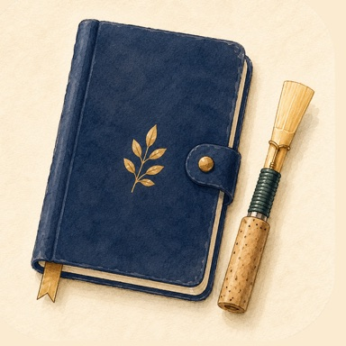

リード日記
本番の成功は、
リード管理から。
一本ずつ違うリードの調子を、その日の練習といっしょに書きとめる。オーボエ／イングリッシュホルン／オーボエ・ダモーレ／ファゴットのダブルリード奏者のための記録アプリです。
iOS 18.0 以降 / iPhone 向け
リードを見きわめる、6つの道具
-
その日の調子を一本ずつ
吹いたリードに、ステータス（色）と★評価、ひとことメモを残します。翌日ひらけば、どれが上がり調子でどれが落ちてきたかがひと目で分かります。
-
使用時間を打刻する
練習1回の中で、どのリードを何分吹いたかをまとめて記録できます。持ち替えの多い練習でも、あとから各リードの日記に反映されます。
-
楽器ごとのフォルダで整理
オーボエ／イングリッシュホルン／オーボエ・ダモーレ／ファゴットごとにリードを分けて管理。色付きのステータスで「今日吹ける一本」がすぐ見つかります。
-
本番の日に、どれを吹いたか
演奏会を予定として登録し、当日に選んだリードを記録に残せます。次の本番でリードを選ぶときの手がかりになります。
-
カレンダーで振り返る
月のグリッドに、記録のある日が並びます。日付をタップすれば、その日に吹いたリードと調子をまとめて見返せます。
-
傾向を数字で見る
リード別のステータス分布と評価の平均、種類ごとの寿命や「絶好調」までの日数、リード同士の比較。次に何を作るか・仕入れるかを決める材料になります。
無料で現役のリードを5本まで登録できます。Pro にすると、リード・ステータス・種類・ケース・評価項目・ハッシュタグの上限がすべてなくなり、分析レポートのフル表示・外観の切り替え・JSON でのバックアップが使えます。
記録は、あなたの端末の中に
リードの記録・写真・練習の記録は、すべて利用者の端末内にのみ保存され、ほかの端末と同期されることはありません。アカウント登録は不要です。改善のための匿名の利用状況の計測は行いますが、メモや写真そのものは送りません。詳細はプライバシーポリシーをご覧ください。
「今日はどれで吹こう」に、答えを。
よくあるご質問はサポートに掲載しています。お問い合わせ: tempuraapps.support@gmail.com